Como navegar


Somos um dos
maiores grupos
de comunicação
100% nacional
e independente.

de mídia*
integrados


o desafio ou o momento
– temos a solução certa
para cada cliente.
Para cada desafio, uma resposta.
em protagonistas
da cultura digital

EXISTIMOS?


objetivos
estratégicos

players
analisados

redes a serem
analisadas

dados em redes
sociais

via IA

I.A de territórios
e outros
formatos de
análise

de personas
(cenário atual).

calibragens e
recomendações
das Pessoas
Inesquecíveis
Pertencimento


comunicação / criativa /
multitarefas
o lifestyle ganha forma em
imagens, experiências e
histórias
para aproximação com
públicos mais jovens


 apresenta
apresenta
 Craques Gigantes
Craques Gigantes
Contexto
No Brasil, 45% das pessoas buscam na renda extra a solução para apoiar as finanças da família. Nesse cenário, oportunidades de faturamento adicional ganham ainda mais relevância social e impacto real.
Insight
Durante a Copa, o mercado disputa atenção com os mesmos formatos e criadores. O Magalu foi por outro caminho: em vez de contratar, revelou influência através dos seus próprios afiliados.
Ideia
“Craques Gigantes” foi uma competição nacional que transformou afiliados em jogadores de uma liga de vendas, convertendo influência real em renda extra no maior campo do mundo: o feed.


 apresenta
apresenta
 Central do Corre
Central do Corre
Contexto
No delivery, tudo foi pensado para chegar rápido. Os entregadores já tinham canais para tirar dúvidas. A informação existia — o desafio era fazê-la chegar de forma mais próxima e humana.
Insight
O problema nunca foi a falta de informação: era a falta de identificação. O mapeamento da comunidade revelou uma forte conexão com a cultura do rap e da rima.
Ideia
A Central do Corre: um hack no Instagram da Keeta onde dúvidas reais dos entregadores viraram rap. Com Vitor Massaki no flow, a informação ganhou a linguagem da rua.


 apresenta
apresenta
 Histórias que crescem com a gente
Histórias que crescem com a gente
Contexto
A Sicredi Serrana, cooperativa com atuação na Serra Gaúcha, Vale do Caí e Espírito Santo, celebrou 40 anos com o desafio de contar 40 histórias marcantes de sua trajetória.
Insight
“Histórias que crescem com a gente” valoriza o protagonismo dos associados: depoimentos reais que ganham forma em quadros pintados por artistas locais.
Ideia
Série de vídeos com depoimentos reais publicada desde julho de 2025, com desdobramentos offline nas agências e mídia tradicional em rádio e jornal nas praças de atuação.


 Vencedor em Branded Content
Vencedor em Branded Content
 Prata em Mídias IntegradasVencedor em Branded Content
Prata em Mídias IntegradasVencedor em Branded Content
 apresenta
apresenta
 Dia das Mães
Dia das Mães
Desafio
Transmitir a emoção da data e construir um filme com o qual o público se identificasse, usando inteligência artificial sem cair num resultado engessado e sem vida, com baixo custo de produção.
Insight
Ilustrar o conceito “Toda mãe nasce no dia mais feliz da sua vida”: mãe e filho brincam com massinha e a realidade se mistura com o imaginário, conduzida pela narração dela.
Execução
A I.A como ferramenta para uma história cheia de afeto. A massinha de modelar trouxe o calor do que é feito à mão, remetendo ao cuidado e à infância — tudo em apenas uma semana.


motionMassinha 3D
 apresenta
apresenta
 Pulando o Bloco
Pulando o Bloco
Contexto
O Carnaval faz o delivery explodir, mas trava a cidade. Bloqueios imprevisíveis e rotas quebradas viram o pesadelo de quem precisa entregar rápido — e a marca perde na experiência.
Insight
Enquanto a cidade curte, tem gente fazendo ela funcionar. A Keeta entra numa conversa legítima: ser a marca que protege o corre do motoca em tempo real.
Ideia
Transformamos as notificações push do app e as redes da marca em uma central de informação urbana, ajudando entregadores a evitar os bloqueios dos bloquinhos de rua.


Estratégia, criação, operação e relacionamento — quem assina cada entrega e sustenta a metodologia no dia a dia. Todos no mesmo tamanho: a direção é um time, não uma pirâmide.


Coordenações e lideranças de criação, mídia, dados, influência, planejamento, atendimento e financeiro. É essa camada que transforma a estratégia em rotina — e a rotina em resultado.


Sumário
Credenciais WT.AG · 2026 · abertura e cinco atos, 26 telas